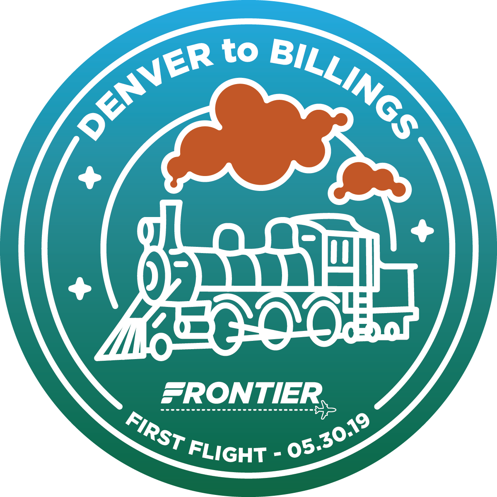
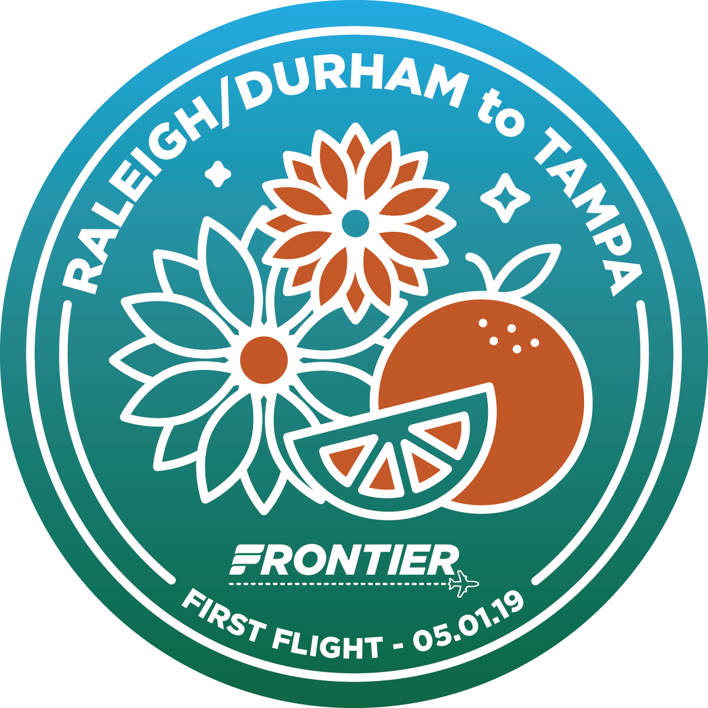
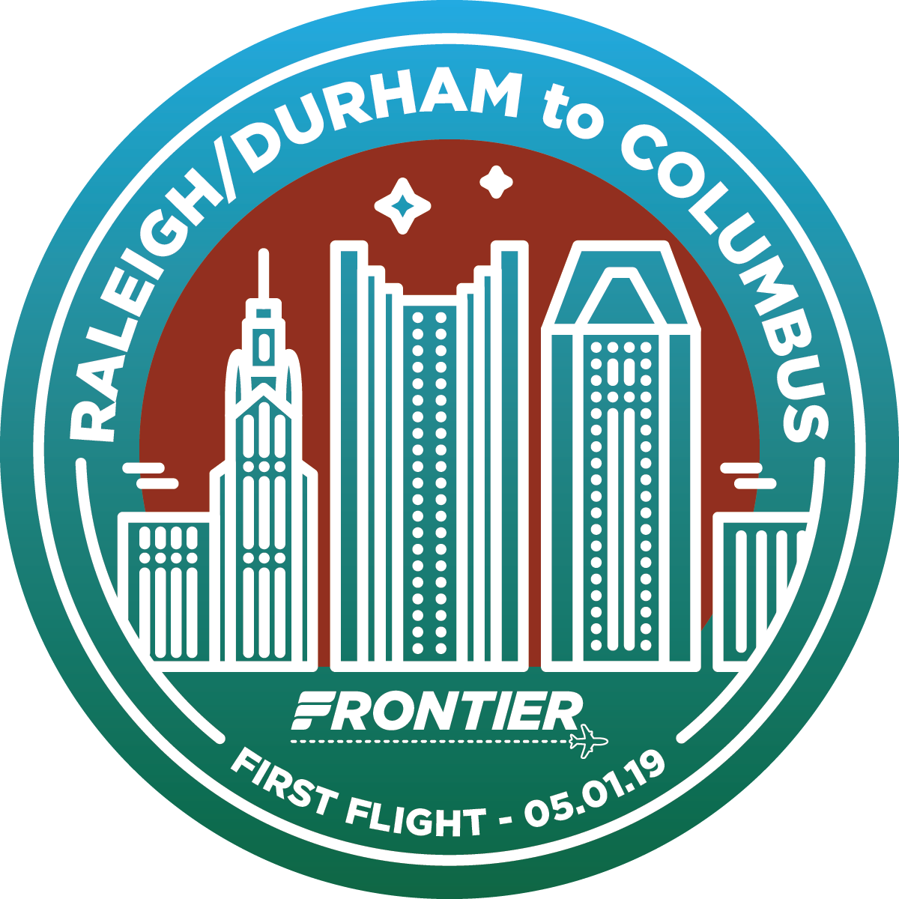
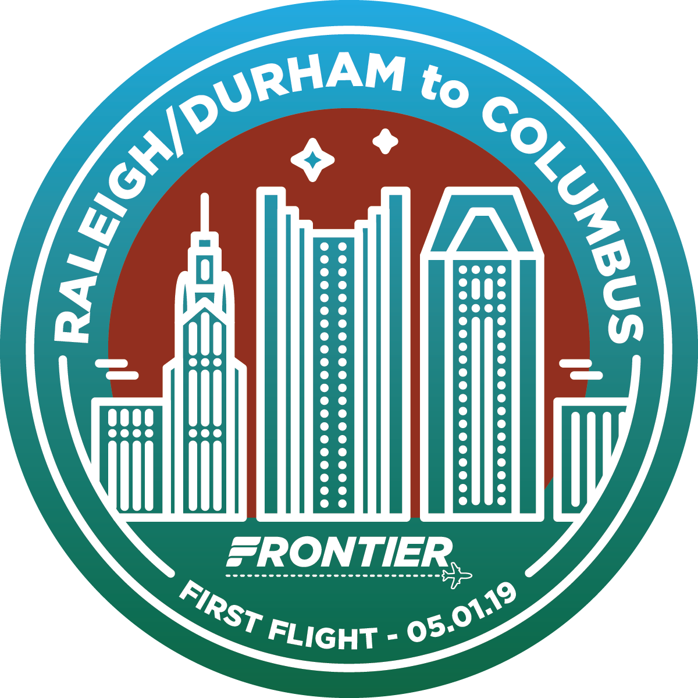
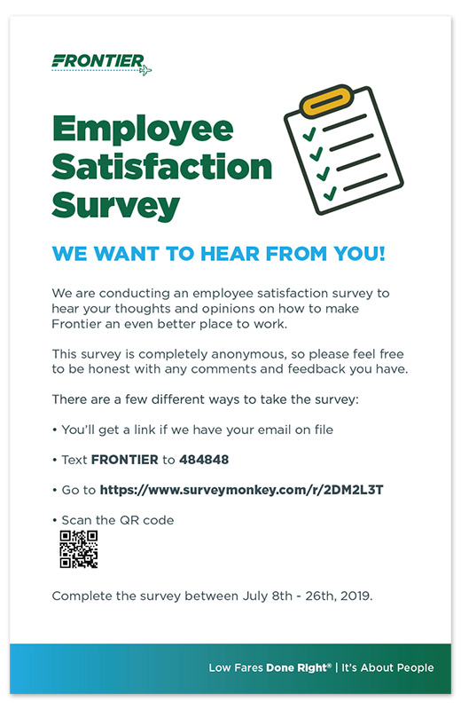

Frontier Airlines
Being a part of aviation was not something I thought my career would take me. I collaborated with the marketing team making ads, marketing collateral, emails, and social promotions. As a corporate entity, branding and corporate communication were also a large part of the day to day work in the office.
Email Heros
Before I was brought on, email was a tad boring. With a bit of convincing and data collecting, I was able to create emails using some motion graphics. The puns, which were already an integral part of the branding, were the biggest use of any copywriting I did.


Inaugural Stickers
Event swag for initial route services. The stickers were my favorite to make, but we often did t-shirt, vouchers, and branded signage.


 



Social
Digital ads, in general, were basic branding that was already in place, or lead by partners. I was able to do these hiring ads using Frontier guidelines, but I added a bit of flair that was different than the typical plane and sky motif. I had the chance to break out of the boundary a bit when making social posts or ads.


Corporate collateral
Most corporate communication was through email or posters. I was able to do many things for TV screens, branding for airports, and needs for every department in the headquarters. The two biggest projects were the media kit and health benefits guide.



Event signage and swag
These are heavily branded collateral for events. Swag often changed to different types of items depending on the location, and signs were to show breadth of service, prices, or general communication.